Pricessor¶
约 3904 个字 3 行代码 21 张图片 预计阅读时间 16 分钟
Tip
这一章的内容光靠理论课是不够的，还是要自己做实验把 CPU 实现一遍才能真正理解贯通这些知识。
实验的内容和理论课还是有一些不同的，但是只要能独立完成实验，这一章的内容也就基本都搞清楚了，所以这一章的笔记会比较简略。 （主要是做完实验之后会觉得好多东西都是显然的，就懒得写了）
Introduction¶
Instruction Execution Overview¶
影响 CPU 性能的因素有：
-
Instruction count
- Determined by ISA and compiler
同一段程序在不同指令集（计算机架构）和编译器的条件下会得到不同的指令总数
-
CPI and Cycle time
- Determined by CPU hardware
For every instruction, the first two steps are identical
- Fetch the instruction from the memory
- Decode and read the registers
Next steps depend on the instruction class
-
Memory-reference
load,store -
Arithmetic-logical
- branches
CPU Overview¶
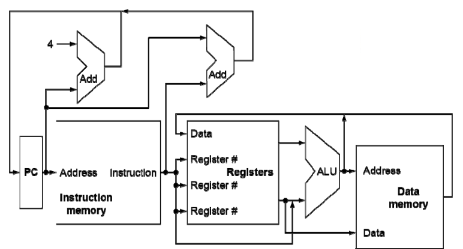
上图是一个非常简单的只能实现少部分指令的 CPU 简图
-
使用 ALU 进行计算
- 计算得到算术指令的结果
- 计算出 load/store 指令所需的内存地址
-
进行 branch 指令的比较
在这里的实现中，我们使用 ALU 进行比较操作，需要跳转到的地址由单独的 Adder 负责计算
-
Access data memory for load/store
- PC \(\leftarrow\) target address or PC + 4
Tip
这里是一个单周期的 CPU，即一条指令的所有操作都要在一个周期内完成，其中包括从内存中读取出指令内容以及从内存中读取数据。
因此我们需要把 InstMem 和 DataMem 分开，这样才能在一个周期内既读指令又读数据。
Control¶
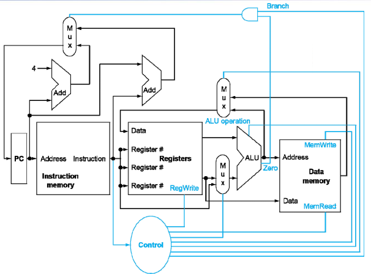
由于寄存器堆的读写、内存的读写、ALU 需要执行的具体操作以及各种多路选择器的选择等都需要相应的控制信号，为了便于管理各种控制信号，我们需要专门设计一个控制单元，它负责从指令内容中解码（decode）得到该条指令所对应的各种信号，并把这些信号送给相应的模块。
上图中的蓝线就是这个简单 CPU 的各种信号线。
Building a datapath¶
Datapath 即数据通路，其中包含着 CPU 整体的各个元件
-
Elements that process data and addresses in the CPU
Registers, ALUs, mux’s, memories, ...
数据通路中需要包含各种指令所使用到的各种元件
Instruction execution in RISC-V¶¶
在单周期 CPU 中，我们可以把一条指令的执行分为如下几个步骤：
-
Fetch:
- Take instructions from the instruction memory
- Modify PC to point the next instruction
-
Instruction decoding & Read Operand:
- Will be translated into machine control command
- Reading Register Operands, whether or not to use
-
Executive Control:
- Control the implementation of the corresponding ALU operation
-
Memory access:
-
Write or Read data from memory
Only ld/sd
-
-
Write results to register:
- If it is R-type instructions, ALU results are written to rd
- If it is I-type instructions, memory data are written to rd
-
Modify PC for branch instructions
- 仅当 Branch 和 jal、jalr 指令会有这个阶段
Instruction fetching¶
首先我们需要先搞清楚各种指令的具体操作，这样才能明确它们所需要的元件和控制信号
-
R-format Instructions
- Read 2 register operands
- Perform arithmetic/logical operation
- Write register result
-
Load/Store Instructions
- Read register operands
-
Calculate address using 12-bit offset
- Use ALU, but sign-extend offset
-
Load: Read memory and update register
- Store: Write register value to memory
-
Branch Instructions
- Read 2 register operands
-
Compare operands
- use ALU, substract and check Zero output
-
Calculate target address
- Sign-extend displacement
- Shift left 1 place (halfword displacement)
- Add to PC value
Path Built using Multiplexer¶
下面我们来根据各种指令类型在 Datapath 中逐渐添加各种元件
- R-type
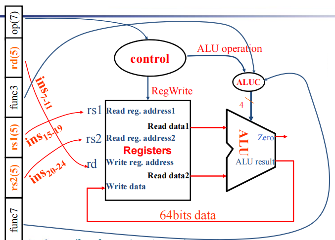
-
I-type
- For ALU-R-I
- For load
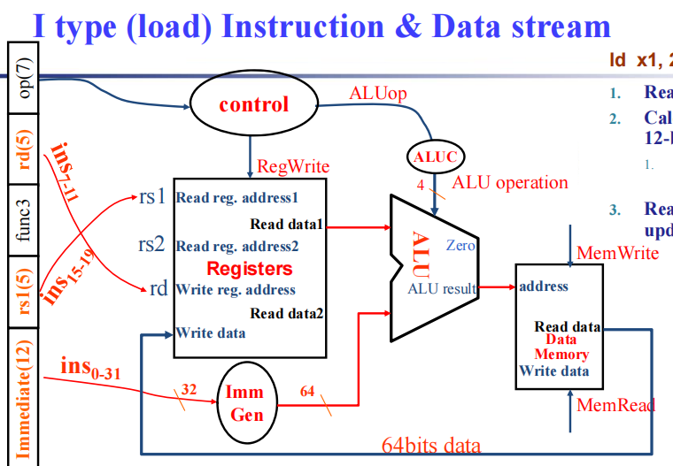
- S-type
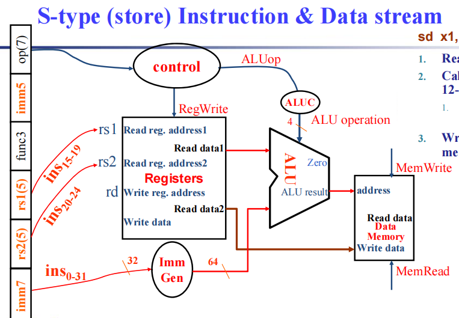
- SB-type
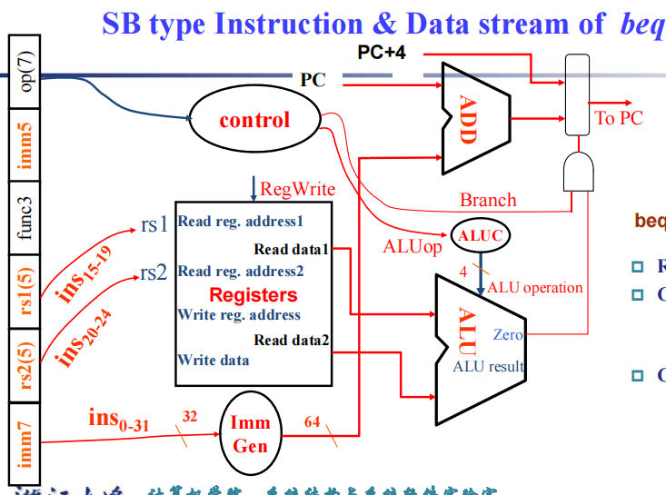
- UJ-type
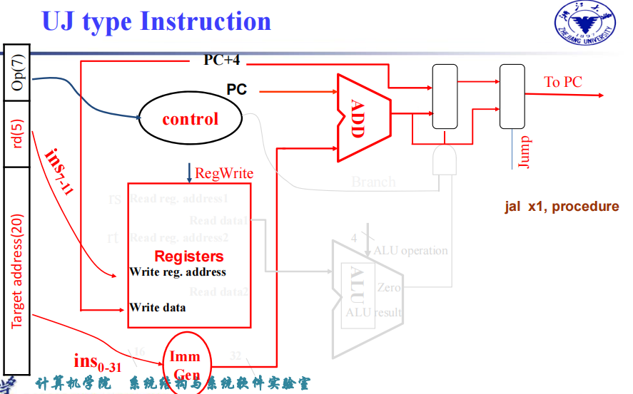
Full datapath
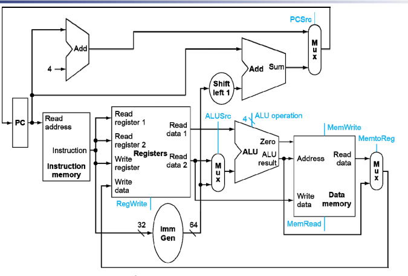
A simple Implementation Scheme¶
对于控制信号，这里只对 ALU 进行详细介绍，其他的各种读写信号和多路选择器选择信号就略过了
ALU used for
- Load/Store: F = add
- Branch: F = subtract
- R-type: F depends on opcode
课件中给出的方法是进行两级解码 2-level decode
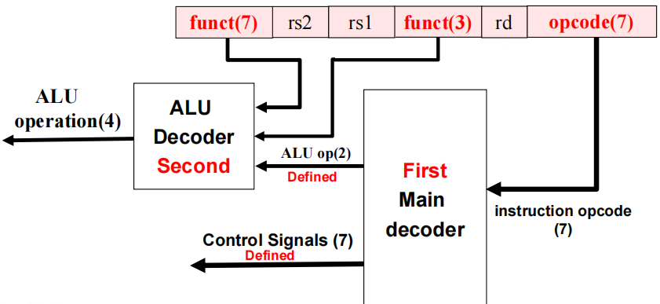
-
先对指令的 opcode 进行一级解码，得到除了
ALU_opration各种控制信号同时会解码出 2 位的
ALU_op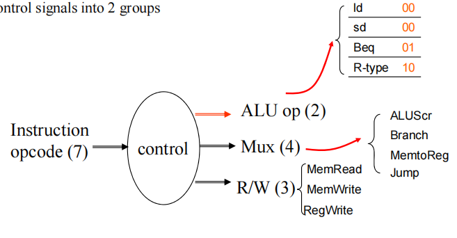
-
假如这一条指令是 ALU 指令的话，就再根据 funct3 和 funct7 得到 ALU 具体要进行何种计算
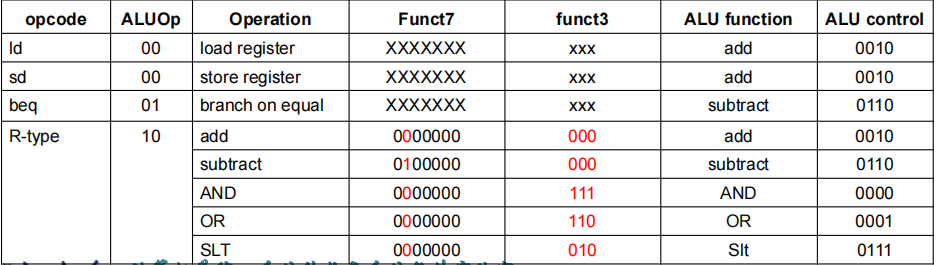
关于其他控制信号
对于其他的控制信号，例如寄存器读写信号、数据内存读写信号、写入寄存器堆/内存的数据来源控制信号等只需要在一级解码时生成就可以了，并不会用得到第二级的解码，这里就不再赘述了。
An Overview of Pipelining¶
Pipelining¶
所谓流水线就是把 CPU 的执行过程分为多个阶段，每个阶段执行指令的其中一部分，这样就可以在一个时钟周期内同时执行多个指令的不同阶段，而不会像单周期 CPU 那样在执行指令时总是要等待上一条指令执行完毕，从而避免硬件资源的空闲。
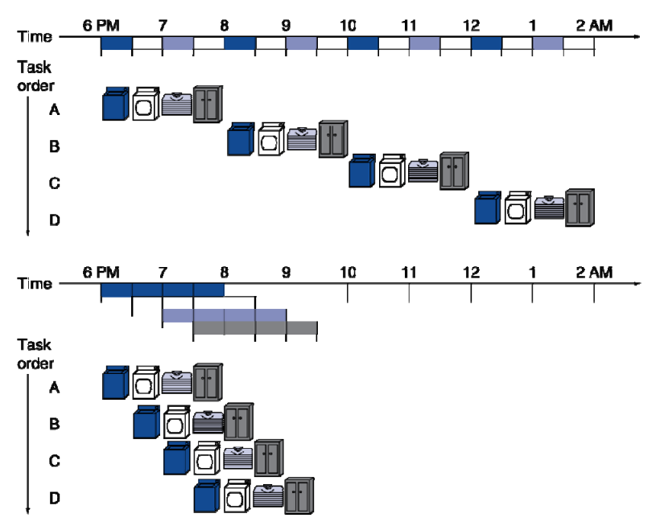
就像上面的图一样，我们可以在同一个时刻进行多个可以并行的操作，从而提高整体的效率。
RISC-V Pipeline¶
在 RISC-V 中，我们可以把每一条指令都分为以下 5 个阶段：
- IF: Instruction fetch from memory
- ID: Instruction decode & register read
- EX: Execute operation or calculate address
- MEM: Access memory operand
- WB: Write result back to register
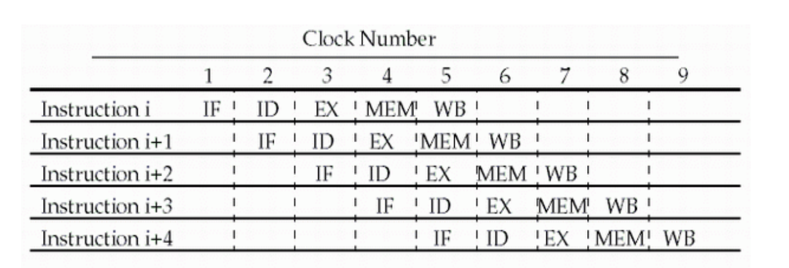
- 当指令的数量足够多时，在理想情况下平均每一个时钟周期完成一条指令，因此 $ CPI \approx 1 $
- 每个阶段所需的时间不同，因此流水线 CPU 的时钟周期取决于最慢的阶段，即时钟周期是最长的阶段所需的时间
- 流水线可以提高吞吐量（throughput） 但并没有改变每条指令的执行时间（Latency）
RISC-V Pipelined Datapath¶
由于流水线 CPU 中的每个阶段都是并行的，每一个阶段执行的内容和所需要的各种数据、信号也是不同的。因此我们需要在数据通路中添加一些寄存器来单独存储每个阶段的数据，这样才能保证每个阶段的数据不会相互干扰。
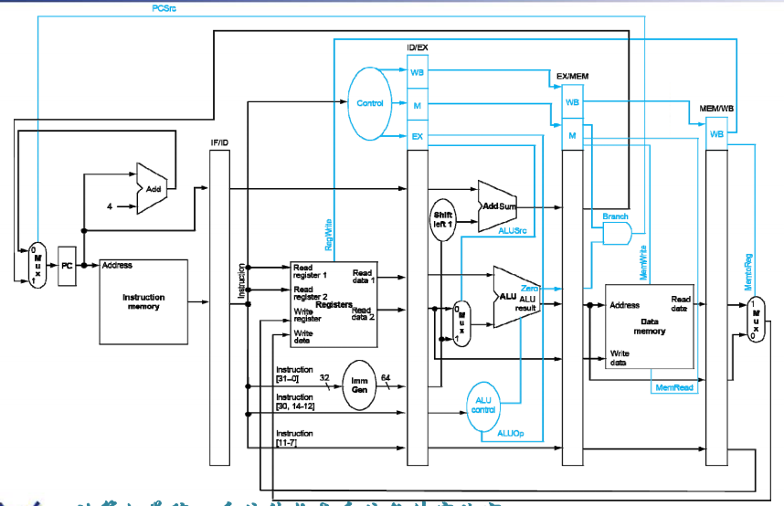
由于各种数据和信号都是在 ID 阶段产生的，后续在 EX、MEM、WB 阶段还会用到这些数据和信号，因此我们要把还需要用到的信号一步步传递下去，这样才能保证每个阶段所拿到的数据都是自己这一条指令所对应的数据。
Pipline Hazards¶
Hazard 的意思是冲突/竞争/冒险，指的是在流水线中由于各种原因导致的指令执行结果不符合预期的情况。
-
Structural Hazards
- A required resource is busy.
- 由于硬件资源的限制导致的冲突。例如多个指令同时需要访问同一个硬件资源，如在同一个周期里内存同时被读和写。
-
Data Hazards
- Need to wait for previous instruction to complete its data read/write.
-
由于数据的依赖关系导致的冲突。
例如一条指令需要用到上一条指令的结果，但是上一条指令还没有运行到 WB 阶段把数据写回寄存器/内存中，下一条指令就把对应寄存器/内存地址的值取出来了，这样就会导致取出错误的数据。
-
Control Hazards
- Deciding on control action depends on previous instruction.
-
由于控制流的冲突导致的冲突。
例如一条分支指令的还没有判断出是否需要跳转，但是下一条指令已经被取出来并执行了，这样就会导致错误执行本不应该执行的指令。
Structural Hazards¶
在计组中我们会遇到的结构冒险只有内存上的结构冒险（因为寄存器堆是允许同时进行读写操作的），例如如果只有一块内存，但 IF 和 MEM 阶段都需要使用这块内存，那么 IF 就会被 stall 暂停，产生一个 bubble，等到 MEM 阶段完成后再继续执行。
但是我们可以把指令内存和数据内存分开（冯诺依曼架构），这样两者就不会出现冲突了。
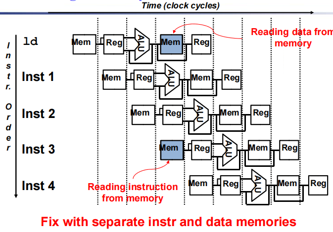
为何有时候会允许机器出现结构冒险？
- To reduce cost .
- i.e. adding split caches, requires twice the memory bandwidth.
- also fully pipelined floating point units costs lots of gates.
- It is not worth the cost if the hazard does not occur very often.
- To reduce latency of the unit.
- Making functional units pipelined adds delay (pipeline overhead -> registers).
- An unpipelined version may require fewer clocks per operation.
- Reducing latency has other performance benefits, as we will see
Data Hazards¶
An instruction depends on completion of data access by a previous instruction.
stall¶
Example
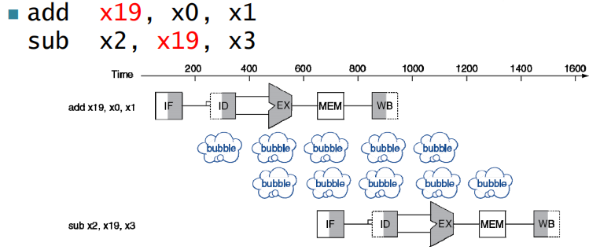
在这个例子中我们使用了一个最为朴素的办法来解决数据冒险，在两条指令之间插入两个空指令（即 bubble），从而保证前一条指令在 WB 阶段把数据写回寄存器后，后一条指令才在 ID 阶段取出数据。
Forwarding¶
除了直接插入 bubble 之外，我们还可以通过前递（forwarding）来解决数据冒险。
-
Use result when it is computed
- Don't wait for it to be stored in a register
- Requires extra connections in the datapath
Example
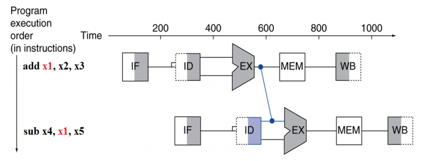
在这个例子中我们可以看到，我们在硬件设计中添加了一个旁路输入，这样就可以把前一条指令在 EX 阶段计算得到的结果直接传递给后一条指令，从而不必 stall 等待前一条指令的结果写回寄存器。
问题的关键显然在于如何判断是否需要前递，事实上我们可以发现，出现数据冒险时，实质上就是前两条指令要改写当前指令的源寄存器，因此我们得到了判断条件：
EX/MEM.RegisterRd = ID/EX.RegisterRs1EX/MEM.RegisterRd = ID/EX.RegisterRs2MEM/WB.RegisterRd = ID/EX.RegisterRs1MEM/WB.RegisterRd = ID/EX.RegisterRs2
由于我们的Rd实际上就是inst[11:7]，但是在许多指令中并没有Rd的存在，或者Rd是不可能被改写的x0，因此我们还需要添加一些判断条件：
- EX/MEM.RegWrite 或 MEM/WB.RegWrite 不为 0
-
EX/MEM.RegisterRd 或 MEM/WB.RegisterRd 也不能为 0
即目的寄存器是
x0的话，就不需要前递了。
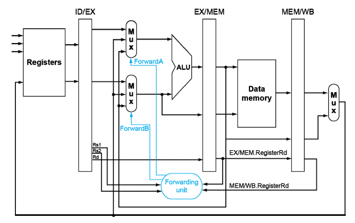
除此之外，我们可能遇到前两条指令都会对同一个寄存器进行改写的情况，例如
这里我们只考虑最新的一条指令的结果，例如上面的第 3 条指令需要的是来自第 2 条指令的结果，而不是第 1 条指令的结果。也就是说我们在前递时要加一个条件，只有在 EX/MEM 阶段不会出现 forwarding 时，才会接受 MEM/WB 阶段的 forwarding。
Load-Use Data Hazard¶
虽然看起来 forwarding 很美好，但它并不能解决所有的数据冒险问题，例如 Load-Use Data Hazard，即后一条指令需要使用到前一条 Load 指令的结果。
之前我们提到的 forwarding 是把 EX 阶段的结果直接传递给后一条指令，但是 Load 指令的结果我们在 MEM 阶段才能得到，因此这时候我们就没办法把数据及时传回给后一条指令了，就必须 stall 一个周期
Example
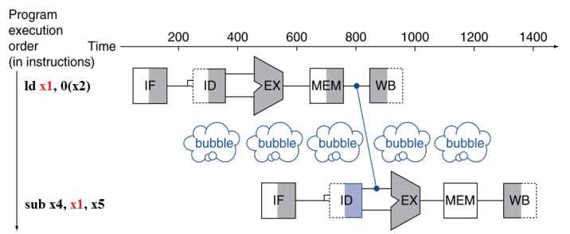
对于 Load-Use Data Hazard 而言，stall 是不可避免的，因此我们也可以得知流水线 CPU 的 CPI 由于这一部分 stall 的存在不可能达到 1。
Load-Use Hazard Detection
load 指令的后一条指令在 ID 阶段时就可以检测出来是否会出现 Load-Use Data Hazard
ID/EX.MemRead and ((ID/EX.RegisterRd = IF/ID.RegisterRs1) or (ID/EX.RegisterRd = IF/ID.RegisterRs2))
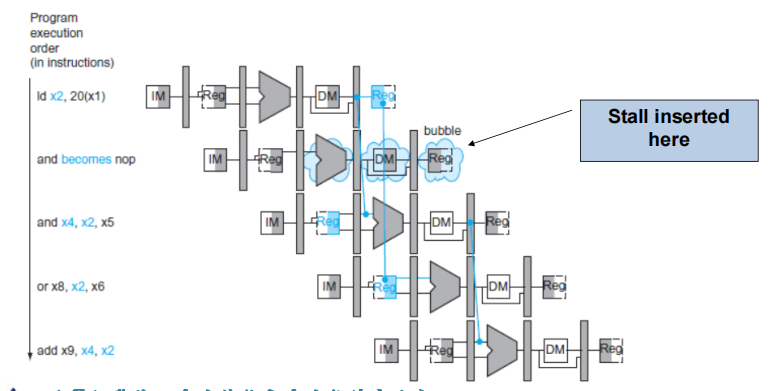
当我们在 load 的后一条指令的 ID 阶段检测到 Load-Use Data Hazard 时，我们就需要进行 stall，具体的操作是：（此时 load 指令正处于 EX 阶段）
- 保持 PC 寄存器和 IF/ID 寄存器中的值不变
- 将 ID/EX 寄存器中的值清零，这样在下一个时钟周期里 EX 阶段中就会出现一个 bubble
Control Hazards¶
无论是 Branch 还是 Jump 指令，都在 EX 阶段才能通过计算得知是否需要跳转、需要跳转到哪一个地址，并且这一条指令在执行到 MEM 阶段时 PC 才会被修改为跳转的目标地址。
假如最终发现需要跳转，但是紧接着跳转指令的下两条指令已经被取出来开始执行了，如果不加以处理，那么这两条本不该执行的指令就会被错误地执行，这就是 Control Hazards。
stall¶
和数据冒险一样，我们可以用最简单粗暴的方法来解决控制冒险，即插入 bubble。每一次在 ID 阶段发现当前指令是 Branch/Jump 指令时，我们就 stall 两个周期，这样就可以防止执行不该执行的指令。
但是这样会大大影响 CPU 的运行效率，因此我们需要考虑其他方法来解决控制冒险——分支预测。
Static Branch Prediction¶
static predict 实际上就是在遇见 Branch 指令时，我们总是预测它会跳转，或总是预测它不跳转，这在硬件层面上就可以实现。
-
predict taken
- Always assume branch is taken
- If not taken, flush pipeline
-
predict not taken
- Always assume branch is not taken
- If taken, flush pipeline
对于 RISC-V 而言，predict not taken 总是要比 predict taken 好，因为我们在设计硬件的时候就可以无论是否需要跳转，都把紧接着跳转指令的两条指令都取出来执行
- 如果不需要跳转，那么就接着执行后面的指令，而不需要做任何处理
- 如果需要跳转，我们只需要把后面两条指令的变为 bubble，即把 IF/ID 和 ID/EX 寄存器中的值清零。
Dynamic Branch Prediction¶
In deeper and superscalar(多发射) pipelines, branch penalty is more significant.
动态分支预测是在运行时根据历史记录来预测分支的行为，这样可以提高预测的准确性，即根据前面几次跳转指令的行为来预测下一次跳转指令的行为。
- Branch prediction buffer (aka branch history table)
- Indexed by recent branch instruction addresses
- Stores outcome (taken / not taken)
-
To execute a branch
- Check table, expect the same outcome
- Start fetching from fall-through or target
- If wrong, flush pipeline and flip prediction
我们常见的动态分支预测有两种：1-bit predictor 和 2-bit predictor
实际上还有其他的分支预测方法，例如把多次出现的跳转的值储存到一个表中，然后根据这个表来预测下一次跳转的行为，这样可以提高预测的准确性。
Exception¶
“Unexpected” events requiring change in flow of control.
-
Exception 异常
- Arises within the CPU
- e.g. undefined opcode, syscall, …
-
Interrupt 中断
- From an external I/O controller
Handling Exceptions¶
-
保护CPU现场，进入异常
-
Save PC of offending (or interrupted) instruction
- In RISC-V: Supervisor Exception Program Counter (mEPC)
-
Save indication of the problem
- In RISC-V: Supervisor Exception Cause Register (mCAUSE)
-
64 bits, but most bits unused
- Exception code field: 2 for undefined opcode, 12 for hardware malfunction, …
-
-
处理中断事件
- Jump to handler，mtvec 寄存器负责提供中断处理程序的地址
-
退出异常，恢复正常操作
- 当异常程序处理完成后，最终要从异常服务程序中退出，并返回主程序。对于机器模式，使用 MRET 退出指令，返回到 SEPC 存储的 pc 地址开始执行。
Handler Actions¶
被称为中断服务程序，实际上就是内存中专门负责处理中断和异常的程序
- Read cause, and transfer to relevant handler
- Determine action required
-
If restartable
- Take corrective action
- use SEPC to return to program
-
Otherwise
- Terminate program
- Report error using SEPC, SCAUSE,
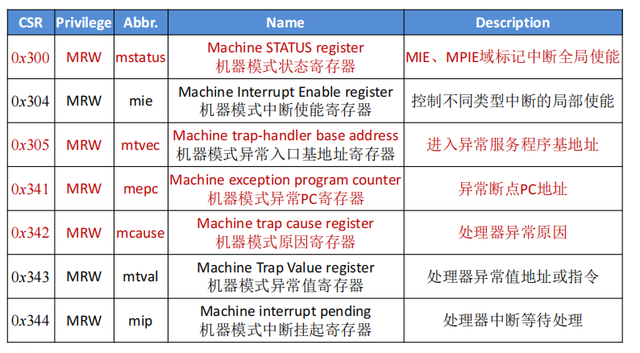
Exceptions in a Pipeline¶
-
Another form of control hazard
因为出现中断或者异常时，我们需要立即停止当前的指令执行，转而跳转到中断服务程序的地址，因此这也算是一种 control hazard。
Example
Consider overflow on add in EX stage
add x1, x2, x1
- Prevent
x1from being clobbered - Complete previous instructions
- Flush
addand subsequent instructions - Set Cause and SEPC register values
- Transfer control to handler